L'appartement 85
Rénovation complète d’un appartement de 85 m²
Une rénovation tous corps d’état en Île-de-France, avec un travail de finition marqué sur les pièces d’eau.
Avant / après
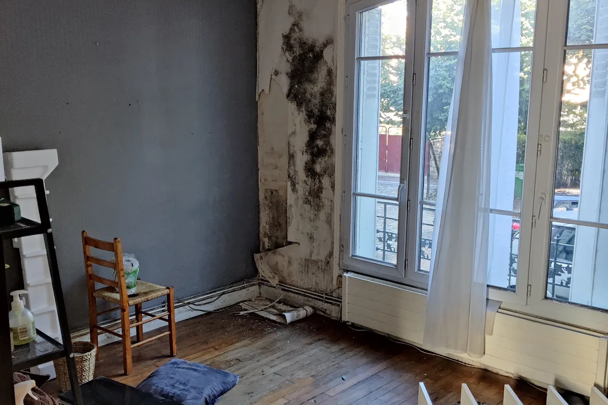
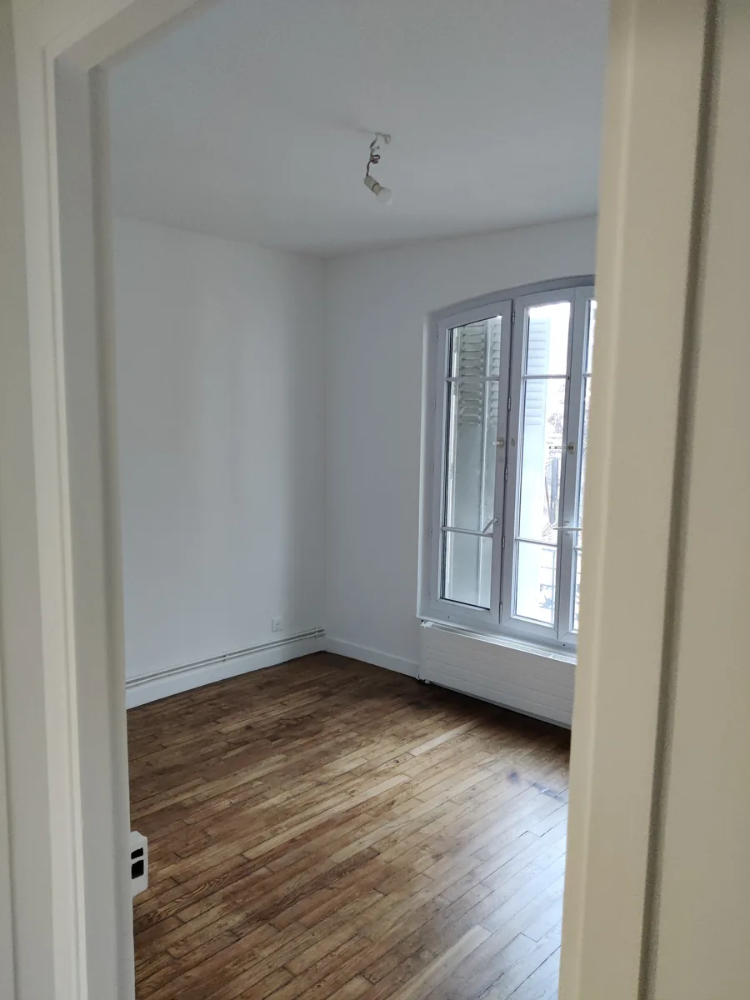
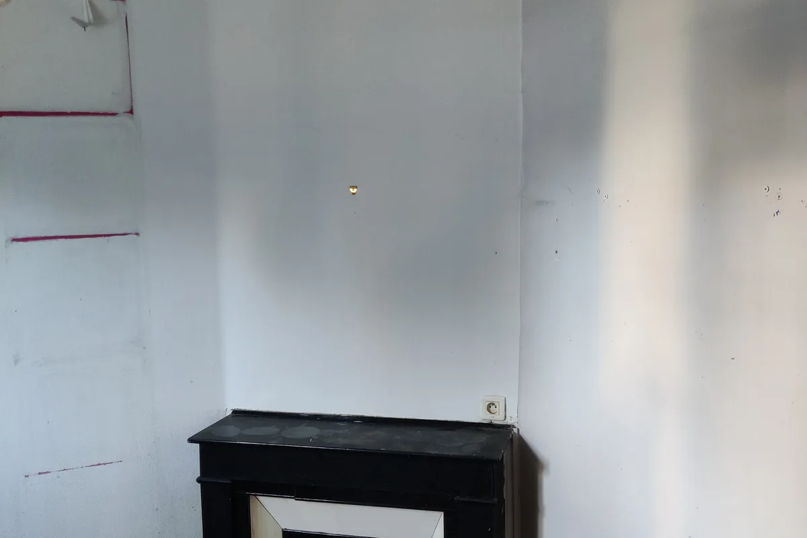
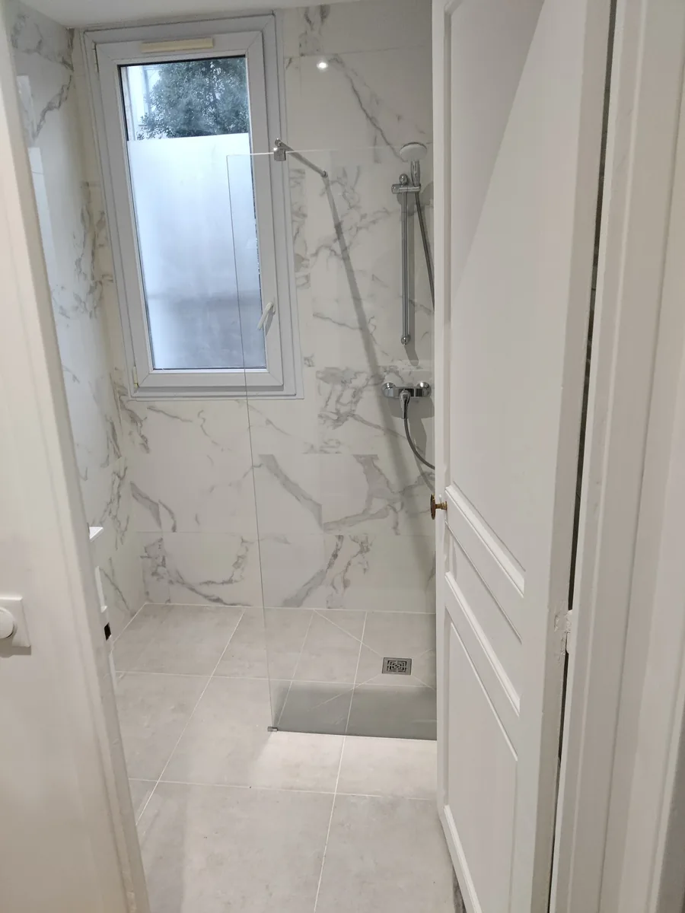
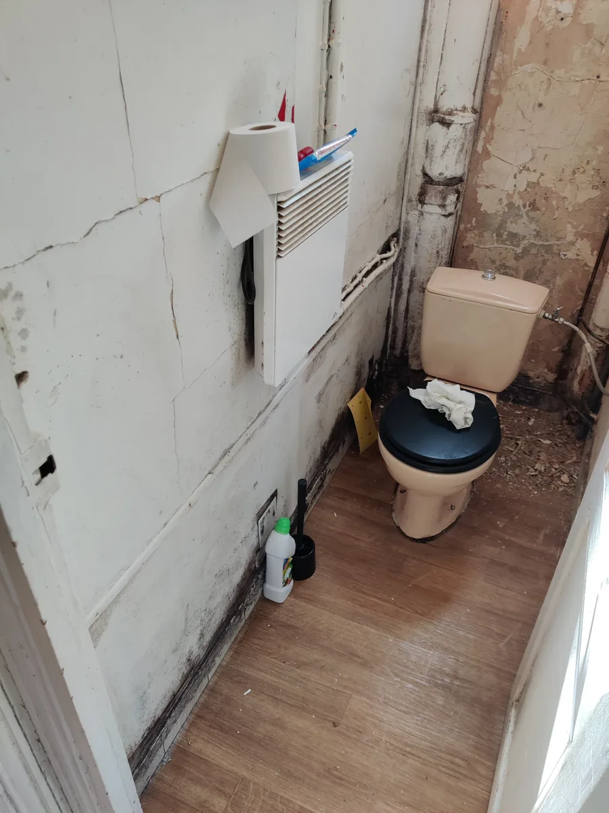
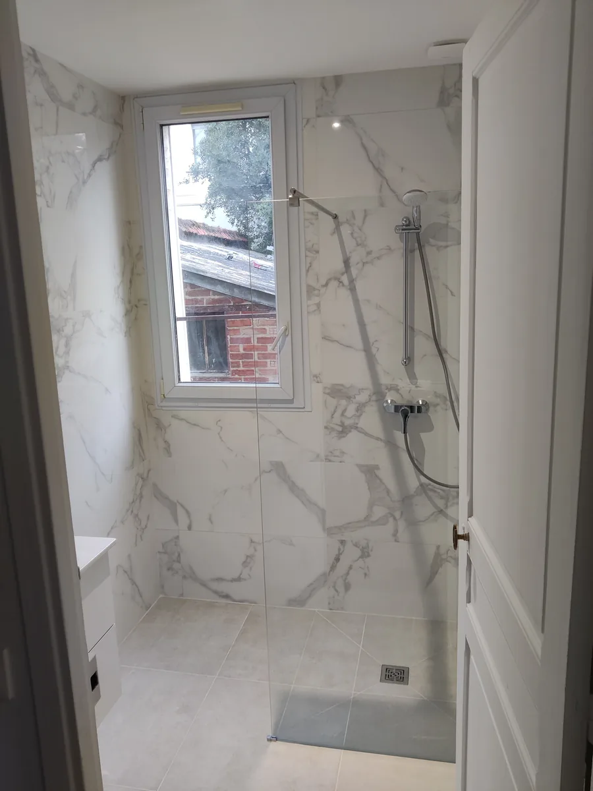
Le chantier
L’appartement part d’un état d’origine complet : parquet fatigué, menuiseries à reprendre, pièces d’eau à refaire entièrement. La reprise porte sur toutes les pièces, et l’enfilade a été conservée plutôt que recloisonnée.
Le chantier s’est conduit dans un bâti ancien, avec ce que cela suppose : sols protégés sur toute leur surface avant la première dépose, saignées ouvertes dans une maçonnerie qui réserve des surprises, et une implantation reprise au niveau laser avant de monter la moindre cloison.
La salle de bain est habillée de faïence effet marbre sur une douche à l’italienne. Le grand format des dalles a imposé un calepinage étudié en amont, coupes comprises.
Ce chantier appartient à la catégorie que nous conduisons le plus souvent - rénovation complète en Île-de-France, tous corps d’état, avec optimisation des espaces existants et, lorsque le client le souhaite, une livraison clé en main jusqu’au montage des meubles.
Les métiers mobilisés
- Dépose et évacuation
- Plomberie
- Électricité
- Plâtrerie
- Carrelage et faïence
- Menuiseries
- Parquet
- Peinture
Pendant les travaux
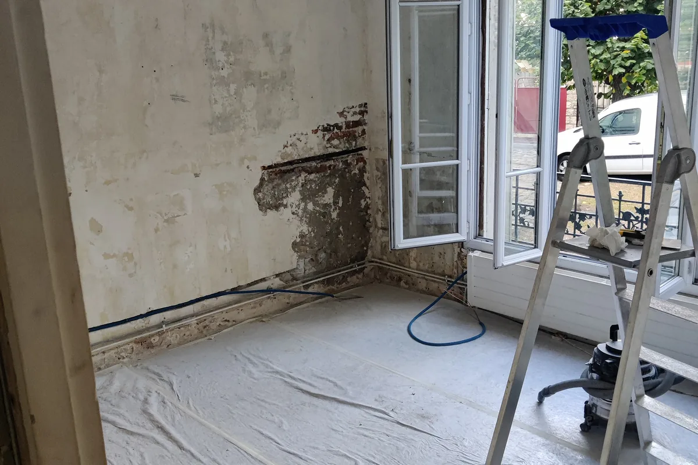
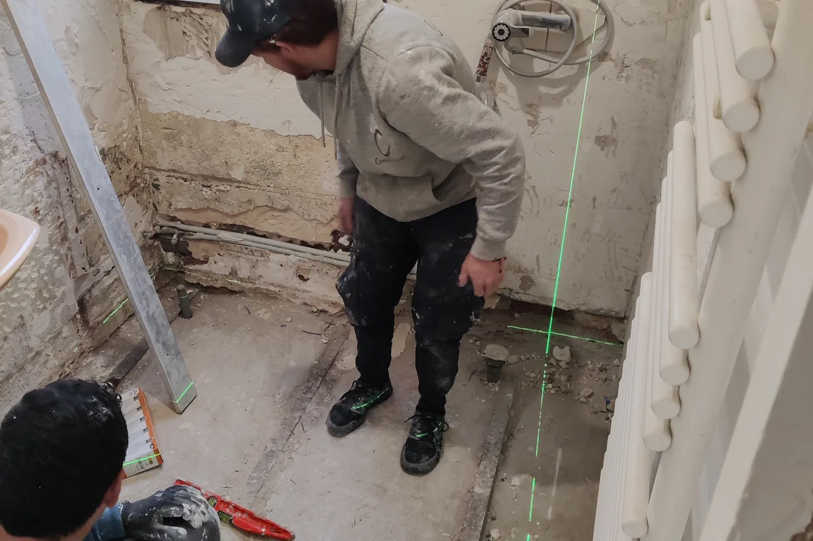
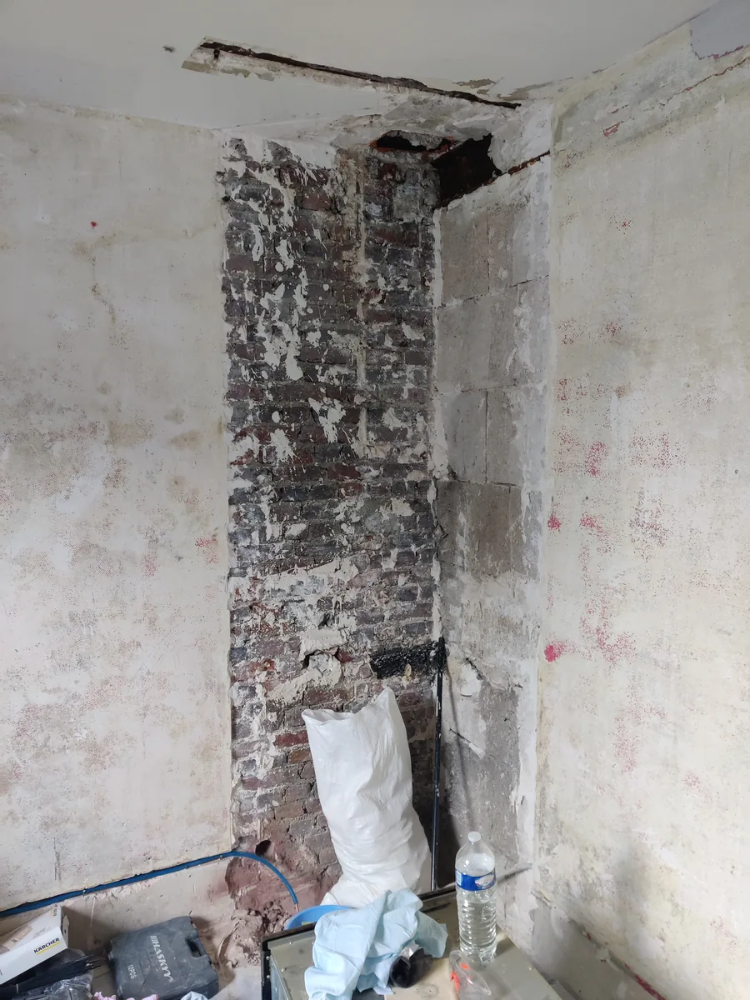
Le résultat
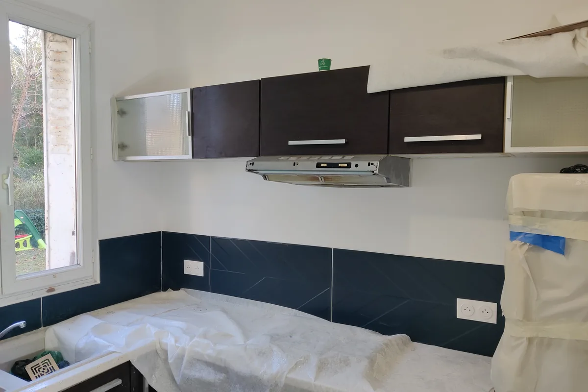
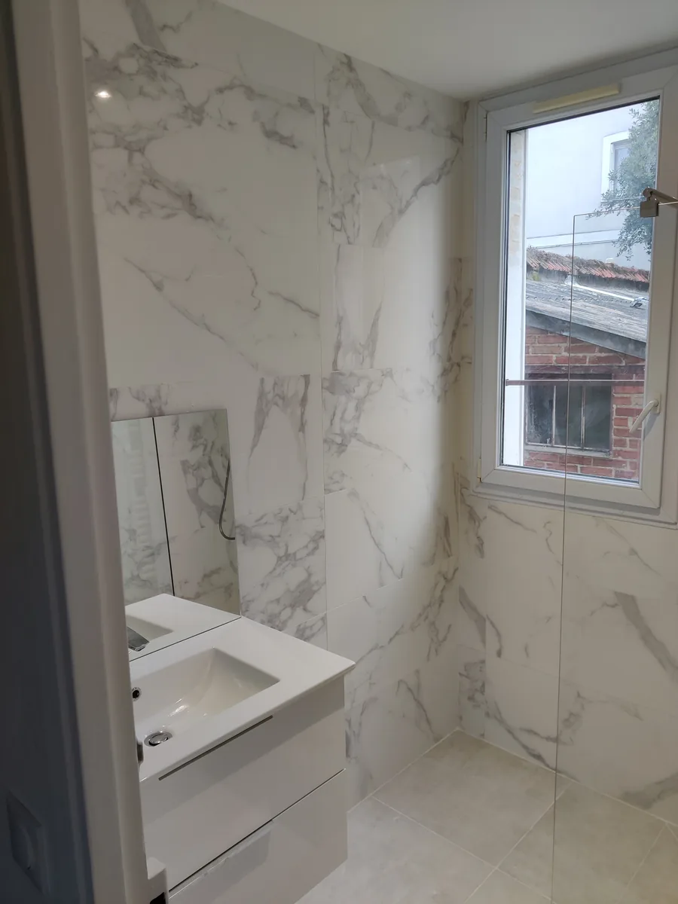
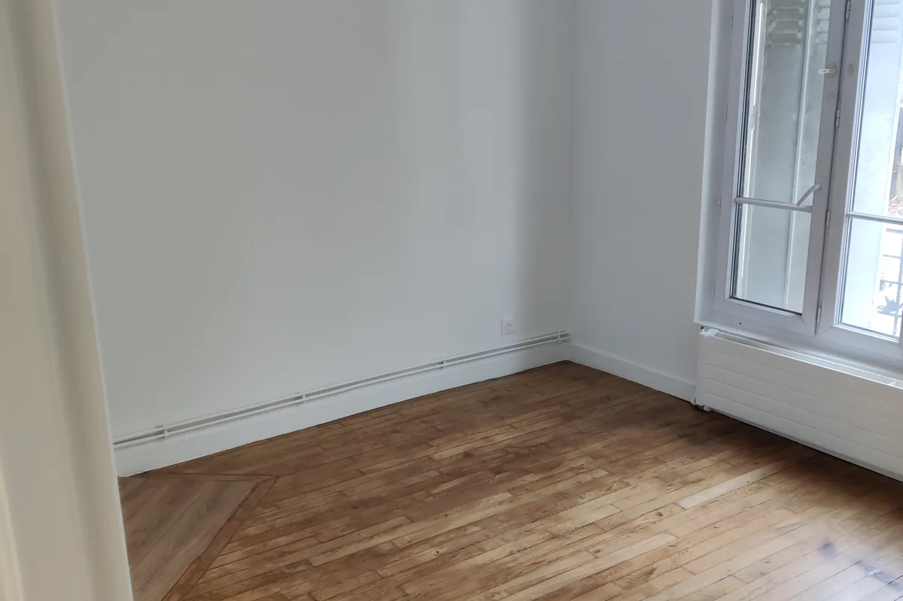
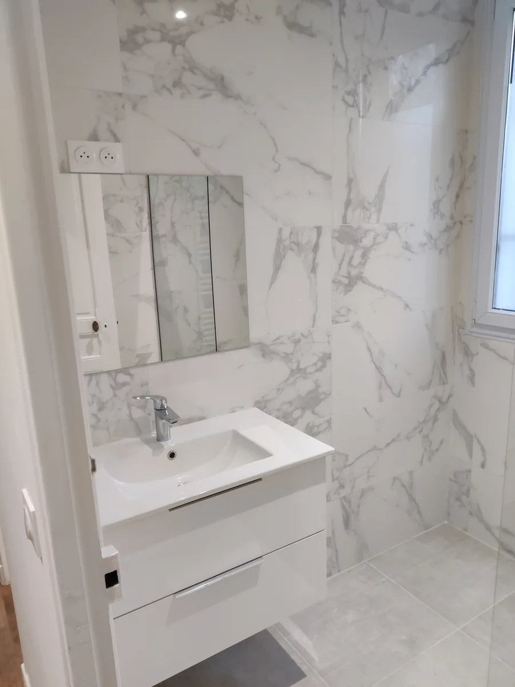
Voir d'autres chantiers
Un projet comparable ?
Expliquez-nous ce que vous souhaitez transformer. Nous revenons vers vous avec un périmètre et un prix définis avant de commencer.